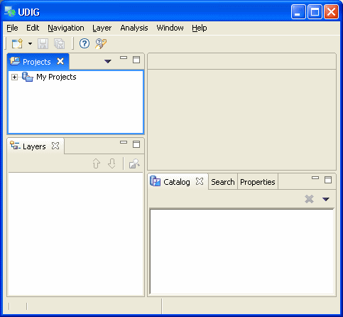
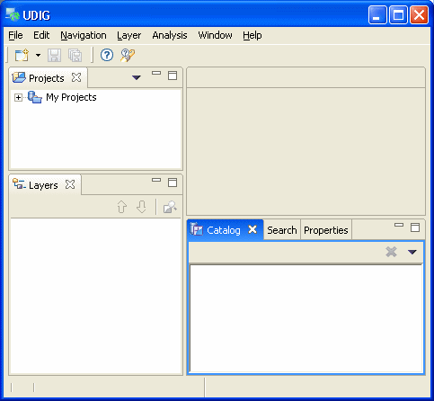

Some features are common to both views and editors. We use the term “part” to mean either a view or an editor. Parts can be active or inactive, but only one part can be active at any one time. The active part is the one whose title bar is highlighted.
The active part is the target for common operations like cut, copy and paste. The active part also determines the contents of the status line. If an editor tab is white it indicates the editor is not active, however views may show information based on the last active editor.
In the image below, the Projects view is active.

Clicking on the Catalog view causes the Catalog view title bar to turn blue and the Projects view title bar to no longer be blue, as shown below. The Catalog view is now active.
